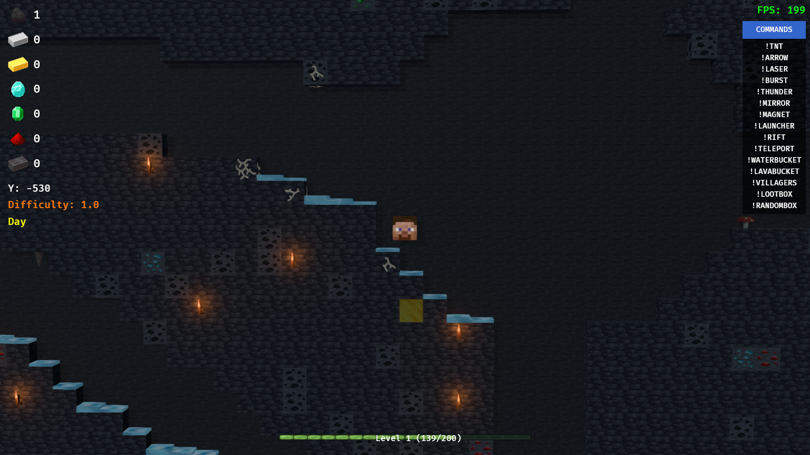
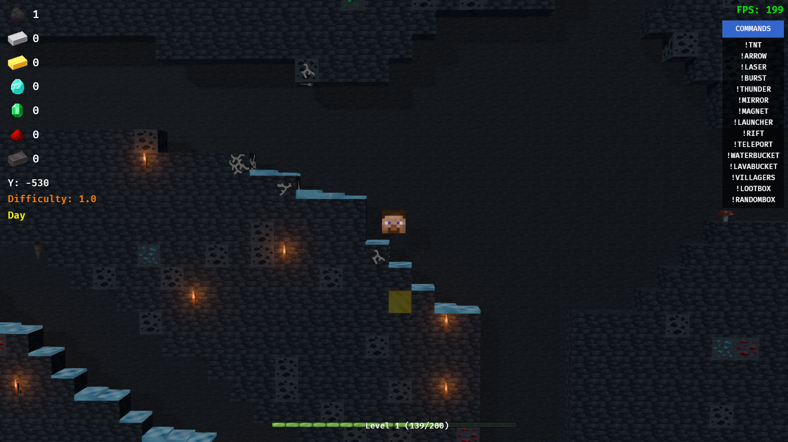
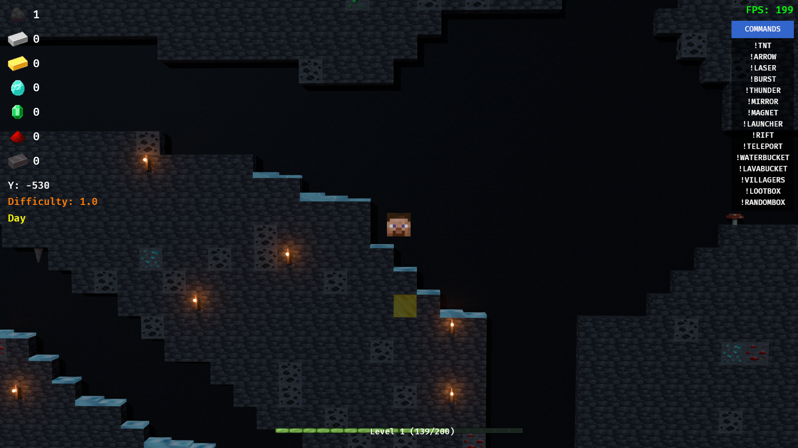
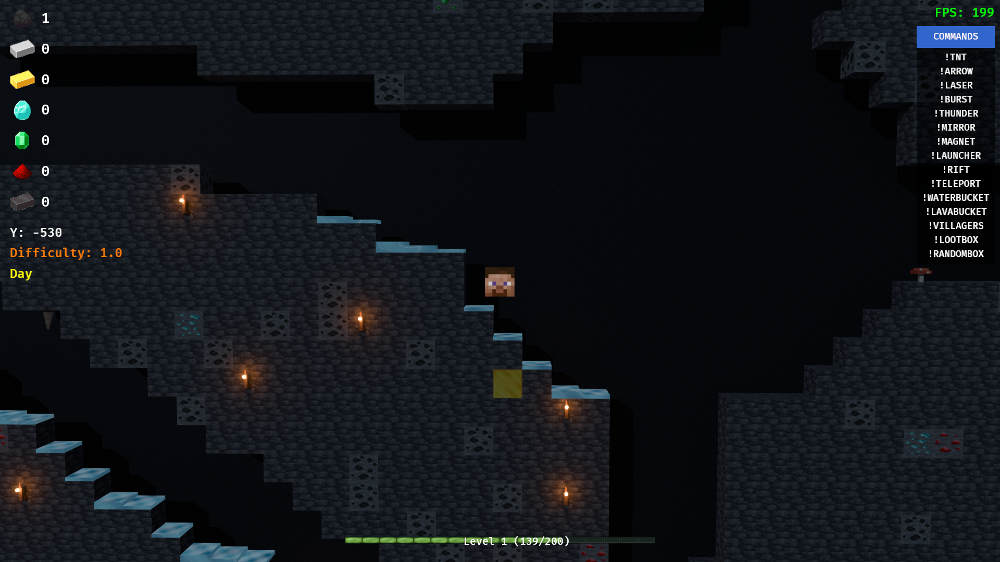

27 October 2026 · RTX 5070 Ti 16 GB · driver 617.42 · i7-13700K · 1920×1080 output
The depth separation has a very small GPU cost in this tested scene, with no measured frame-rate regression. The opaque raster pass increased by 0.001792 ms. RT lighting plus its cache increased by 0.061760 ms (1.022848 → 1.084608 ms). These are pass timings, not total GPU frame duration.
| Renderer | Old depth | New depth | Equivalent FPS |
|---|---|---|---|
| Raster + shadows (native 1080p) | 4.698 ms | 4.673 ms | 212.9 → 214.0 |
| Ray tracing + DLSS Quality | 4.738 ms | 4.636 ms | 211.1 → 215.7 |
The slight FPS increases should not be treated as an optimization benefit. The nearly unchanged whole-frame rate despite much higher RT GPU work suggests a CPU or submission limit; this is an inference, not a separate CPU profile. Frame times vary between windows. Simulation is frozen to isolate rendering, so these are not predictions for ordinary live gameplay.
| Pass | Old depth | New depth | Difference |
|---|---|---|---|
| Opaque 3D draw | 0.181760 | 0.183552 | +0.001792 |
| Reported shadow pass | 0.012928 | 0.013056 | +0.000128 |
| Ambient occlusion | 0.246784 | 0.246784 | +0.000000 |
| RT lighting | 0.936960 | 0.962240 | +0.025280 |
| RT lighting cache | 0.086016 | 0.122368 | +0.036352 |
| DLSS ray reconstruction | 1.821312 | 1.832064 | +0.010752 |
| RT acceleration structure update | 0.113664 | 0.113664 | +0.000000 |
Individual GPU passes are timed separately. They are not summed into a claimed total GPU frame measurement. Shadow-pass differences are at timer/noise scale. The RT lighting/cache increase is consistent across repeated windows.
Same optimized executable, seed 921 and underground scene; 8,397 loaded terrain blocks, 18,360 tiled background entities and 52 structure backing entities. These are resident counts, not visible draw counts. Exact terrain entity/position lists and camera transforms were asserted unchanged after all 16 measurement windows.
The terrain center stays at Z = −10 in both cases. The historical adjustment moved wallpaper Z −10 → −100 and structure backing Z −5 → −30. Terrain mesh and cube-mesh source hashes match the pre-adjustment backup. No geometry was added by the depth separation.
Each renderer ran old/new/new/old/new/old/old/new, with 25 seconds initial warm-up, five seconds after later switches, and eight seconds measured per window. Total: 26,577 whole-frame samples across 128 measured seconds. Tables use the median of four window medians per condition. GPU samples are deduplicated by measurement timestamp; stale samples are discarded.
Uncapped, VSync off, frame generation off, clear weather, fog off; lighting, local lights, bloom and raster shadows enabled. Raster: native 1920×1080, FXAA and high SSAO. RT: Solari + DLSS Ray Reconstruction Quality at 1920×1080 output; DLSS selects its Quality input resolution. Comparisons are within each renderer, not between their different rendering resolutions.
This is one fixed underground view, tested on the user's active desktop with other applications left open. It does not establish zero cost in every biome, at other resolutions, or on other GPUs. The on-screen FPS text in captures is frozen with simulation; the data comes from real-time frame deltas and GPU timestamps.
Old depth on the left; current depth on the right.




tools/Build-FallingHeadsOptimized.ps1 -SkipCheckstools/Test-FallingHeadsDepth.ps1python tools/analyze_depth_benchmark.py
The opt-in fixture is src/depth_probe.rs. Do not run alongside another FallingHeads instance. The wrapper restores graphics-settings.json byte-for-byte. The installed game was not replaced.
Build SHA256: 2621442A9B8AD28F539004B2ED68EA0141023FC8E17A78FB9D25F5512898A0D8. Optimized app build and lint gate passed (269 existing diagnostics, no new warnings). The native fixture completed all phases and shut down cleanly.
Raw per-window samples · Full statistical summary · Native test log · GPU clocks, load and temperature